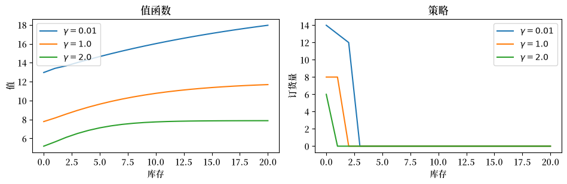
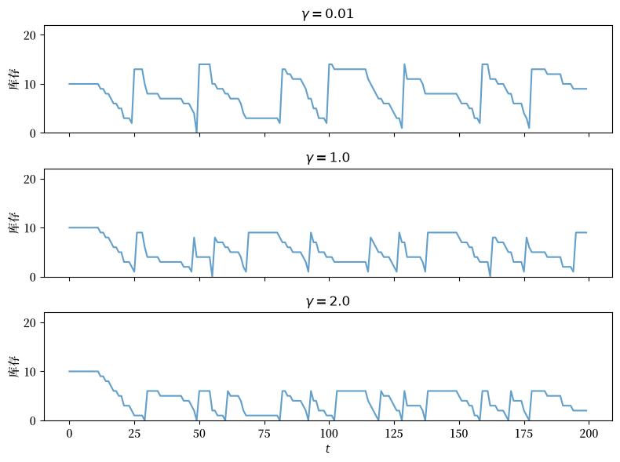
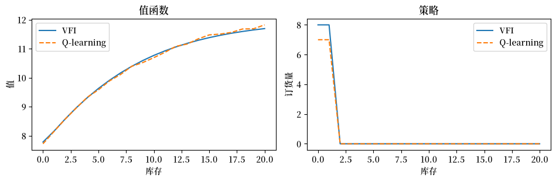
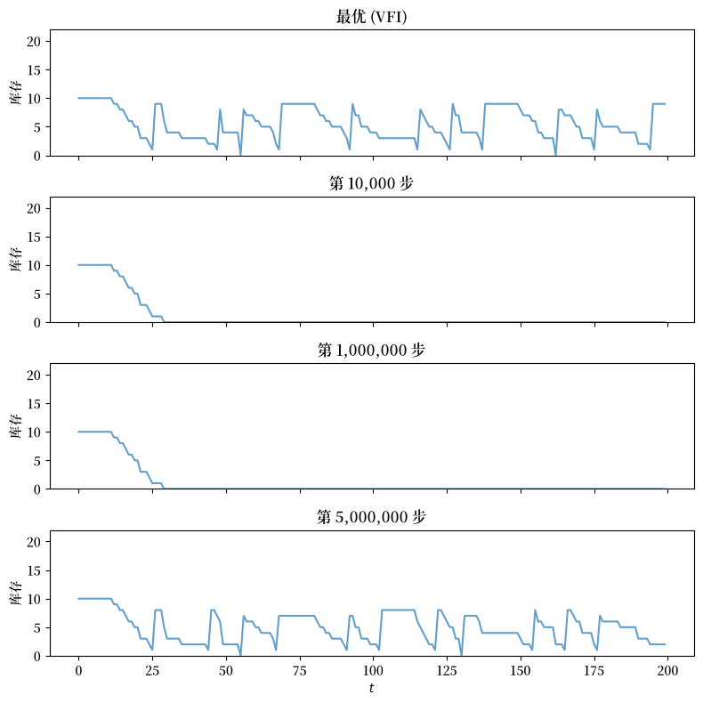

62. 通过 Q-Learning 进行风险敏感型库存管理#
62.1. 引言#
在 通过 Q 学习进行库存管理 中，我们研究了一个库存管理问题，并用值函数迭代和 Q-learning 两种方法进行了求解。
在本讲中，我们考虑一个风险敏感的变体。
引入风险敏感性反映了这样一个事实：在存在金融和信息摩擦的不完全市场中，企业在决策时通常会考虑风险。
换句话说，企业的行为一般来说并非风险中性的。
处理这一问题的一个自然方法是使用贝尔曼方程的风险敏感版本。
我们将展示如何用值函数迭代来求解该模型。
然后，我们研究风险敏感性如何影响最优策略。
import numpy as np
import numba
import matplotlib.pyplot as plt
from typing import NamedTuple
import matplotlib as mpl # i18n
FONTPATH = "fonts/SourceHanSerifSC-SemiBold.otf" # i18n
mpl.font_manager.fontManager.addfont(FONTPATH) # i18n
mpl.rcParams['font.family'] = ['Source Han Serif SC'] # i18n
62.2. 模型#
通过 Q 学习进行库存管理 中库存管理问题的贝尔曼方程具有如下形式
这里 \(D\) 是一个服从分布 \(\phi\) 的随机变量。
（基本要素和定义与 通过 Q 学习进行库存管理 相同。）
该贝尔曼方程的风险敏感版本具有如下形式
其中对于固定的 \(\gamma > 0\)，\(\psi(t) = \exp(-\gamma t)\)。
由于 \(\psi^{-1}(y) = -\frac{1}{\gamma} \ln(y)\)，贝尔曼方程变为
这里 \(\phi(d)\) 表示需求的概率质量函数，与 通过 Q 学习进行库存管理 中相同。
参数 \(\gamma\) 控制风险敏感性的程度。
当 \(\gamma \to 0\) 时，确定性等价物退化为普通的期望，我们便恢复了风险中性的情形。
\(\gamma\) 越大，意味着对下行风险的厌恶程度越高。
贝尔曼算子、贪婪策略和 VFI 算法都可以从风险中性的情形沿用过来，只需将期望替换为确定性等价物。
62.3. 通过值函数迭代求解#
62.3.1. 模型设定#
我们重用与 通过 Q 学习进行库存管理 相同的模型基本要素，并加入 \(\gamma\) 作为一个参数。
class RSModel(NamedTuple):
x_values: np.ndarray # 库存值
d_values: np.ndarray # 用于求和的需求值
ϕ_values: np.ndarray # 需求概率
p: float # 需求参数
c: float # 单位成本
κ: float # 固定成本
β: float # 贴现因子
γ: float # 风险敏感性参数
def create_rs_inventory_model(
K: int = 20, # 最大库存
D_MAX: int = 21, # 用于求和的需求上界
p: float = 0.7,
c: float = 0.2,
κ: float = 0.8,
β: float = 0.98,
γ: float = 1.0
) -> RSModel:
def demand_pdf(p, d):
return (1 - p)**d * p
d_values = np.arange(D_MAX)
ϕ_values = demand_pdf(p, d_values)
x_values = np.arange(K + 1)
return RSModel(x_values, d_values, ϕ_values, p, c, κ, β, γ)
62.3.2. 贝尔曼算子#
风险敏感的贝尔曼算子用确定性等价物替换了期望值。
为了数值稳定性，我们使用 log-sum-exp 技巧：给定值 \(z_i = \pi(x, a, d_i) + \beta \, v(h(x, a, d_i))\)，我们计算
其中 \(m = \max_i (-\gamma z_i)\)。
@numba.jit(nopython=True)
def T_rs_kernel(v, d_values, ϕ_values, c, κ, β, γ, K):
new_v = np.empty(K + 1)
n_d = len(d_values)
for x in range(K + 1):
best = -np.inf
for a in range(K - x + 1):
# 为每个需求实现计算 -γ * z_i
exponents = np.empty(n_d)
for i in range(n_d):
d = d_values[i]
x_next = max(x - d, 0) + a
revenue = min(x, d)
cost = c * a + κ * (a > 0)
z_i = revenue - cost + β * v[x_next]
exponents[i] = -γ * z_i
# 用于数值稳定性的 log-sum-exp 技巧
m = np.max(exponents)
weighted_sum = 0.0
for i in range(n_d):
weighted_sum += ϕ_values[i] * np.exp(exponents[i] - m)
val = -(1.0 / γ) * (m + np.log(weighted_sum))
if val > best:
best = val
new_v[x] = best
return new_v
def T_rs(v, model):
"""风险敏感的贝尔曼算子。"""
x_values, d_values, ϕ_values, p, c, κ, β, γ = model
K = len(x_values) - 1
return T_rs_kernel(v, d_values, ϕ_values, c, κ, β, γ, K)
62.3.3. 计算贪婪策略#
贪婪策略记录的是最大化的行动，而不是最大化的值。
@numba.jit(nopython=True)
def get_greedy_rs_kernel(v, d_values, ϕ_values, c, κ, β, γ, K):
σ = np.empty(K + 1, dtype=np.int32)
n_d = len(d_values)
for x in range(K + 1):
best = -np.inf
best_a = 0
for a in range(K - x + 1):
exponents = np.empty(n_d)
for i in range(n_d):
d = d_values[i]
x_next = max(x - d, 0) + a
revenue = min(x, d)
cost = c * a + κ * (a > 0)
z_i = revenue - cost + β * v[x_next]
exponents[i] = -γ * z_i
m = np.max(exponents)
weighted_sum = 0.0
for i in range(n_d):
weighted_sum += ϕ_values[i] * np.exp(exponents[i] - m)
val = -(1.0 / γ) * (m + np.log(weighted_sum))
if val > best:
best = val
best_a = a
σ[x] = best_a
return σ
def get_greedy_rs(v, model):
"""获取风险敏感模型的 v-贪婪策略。"""
x_values, d_values, ϕ_values, p, c, κ, β, γ = model
K = len(x_values) - 1
return get_greedy_rs_kernel(v, d_values, ϕ_values, c, κ, β, γ, K)
62.3.4. 值函数迭代#
def solve_rs_inventory_model(v_init, model, max_iter=10_000, tol=1e-6):
v = v_init.copy()
i, error = 0, tol + 1
while i < max_iter and error > tol:
new_v = T_rs(v, model)
error = np.max(np.abs(new_v - v))
i += 1
v = new_v
print(f"Converged in {i} iterations with error {error:.2e}")
σ = get_greedy_rs(v, model)
return v, σ
62.3.5. 创建并求解一个实例#
model = create_rs_inventory_model()
x_values = model.x_values
n_x = len(x_values)
v_init = np.zeros(n_x)
v_star, σ_star = solve_rs_inventory_model(v_init, model)
Converged in 600 iterations with error 9.92e-07
62.3.6. 风险敏感性对最优策略的影响#
我们对 \(\gamma\) 的若干个取值求解模型，并比较所得到的策略。
正如我们将看到的，风险敏感型企业的订货比风险中性型企业更为保守。
γ_values = [0.01, 1.0, 2.0]
results = {}
for γ in γ_values:
mod = create_rs_inventory_model(γ=γ)
v, σ = solve_rs_inventory_model(np.zeros(n_x), mod)
results[γ] = (v, σ)
Converged in 623 iterations with error 9.90e-07
Converged in 600 iterations with error 9.92e-07
Converged in 583 iterations with error 9.96e-07
fig, axes = plt.subplots(1, 2, figsize=(9.6, 3.2))
for γ in γ_values:
v, σ = results[γ]
axes[0].plot(x_values, v, label=f"$\\gamma = {γ}$")
axes[1].plot(x_values, σ, label=f"$\\gamma = {γ}$")
axes[0].set_xlabel("库存")
axes[0].set_ylabel("值")
axes[0].legend()
axes[0].set_title("值函数")
axes[1].set_xlabel("库存")
axes[1].set_ylabel("订货量")
axes[1].legend()
axes[1].set_title("策略")
plt.tight_layout()
plt.show()
findfont: Failed to find font weight normal, now using 600.
findfont: Failed to find font weight normal, now using 600.
findfont: Failed to find font weight normal, now using 600.

62.3.7. 模拟最优策略#
我们在基准 \(\gamma\) 下，模拟最优策略下的库存动态。
@numba.jit(nopython=True)
def sim_inventories(ts_length, σ, p, X_init=0, seed=0):
"""模拟策略 σ 下的库存动态。"""
np.random.seed(seed)
X = np.zeros(ts_length, dtype=np.int32)
X[0] = X_init
for t in range(ts_length - 1):
d = np.random.geometric(p) - 1
X[t+1] = max(X[t] - d, 0) + σ[X[t]]
return X
fig, axes = plt.subplots(len(γ_values), 1,
figsize=(8, 2.0 * len(γ_values)),
sharex=True)
ts_length = 200
sim_seed = 5678
K = len(x_values) - 1
for i, γ in enumerate(γ_values):
v, σ = results[γ]
X = sim_inventories(ts_length, σ, model.p, X_init=K // 2, seed=sim_seed)
axes[i].plot(X, alpha=0.7)
axes[i].set_ylabel("库存")
axes[i].set_title(f"$\\gamma = {γ}$")
axes[i].set_ylim(0, K + 2)
axes[-1].set_xlabel(r"$t$")
plt.tight_layout()
plt.show()
findfont: Failed to find font weight normal, now using 600.

62.4. 解读结果#
上面的图表明，风险敏感性越强的企业（\(\gamma\) 越大），订货越少，维持的库存水平也越低。
乍一看这似乎令人惊讶：持有更多库存不是能确保企业总能满足需求，从而降低方差吗？
关键在于要弄清利润中的随机性究竟来自何处。
回想一下，每期利润为 \(\pi(x, a, d) = \min(x, d) - ca - \kappa \mathbf{1}\{a > 0\}\)。
订货成本 \(ca + \kappa \mathbf{1}\{a > 0\}\) 是确定性的——它是在需求冲击实现之前就选定的。
因此，更多的订货会把利润的水平下移，但不会影响其方差。
方差来自收入：\(\min(x, D)\)。
当库存 \(x\) 较高时，对于大多数需求实现，\(\min(x, D) \approx D\)——收入继承了需求的全部方差。
当库存 \(x\) 较低时，对于大多数实现，\(\min(x, D) \approx x\)——收入几乎是确定性的，被库存水平所封顶。
因此，风险敏感型主体更偏好较低的库存，因为这样能封顶收入的随机性。
该主体接受较低的预期销售额，以换取更可预测的利润。
此外还有一个延续值的渠道：下一期库存 \(\max(x - D, 0) + a\) 随 \(D\) 变化，而更高的 \(x\) 意味着 \(x - D\) 更紧密地跟随 \(D\)，从而通过 \(v\) 将该方差向前传播。
62.5. Q-Learning#
现在我们要问，能否像在 通过 Q 学习进行库存管理 中风险中性的情形那样，在不了解模型的情况下学习到最优策略。
62.5.1. Q 因子#
第一步是以与风险敏感贝尔曼方程相容的方式定义 Q 因子。
我们定义
用文字表述，\(q(x, a)\) 在期望内部应用了风险敏感性变换 \(\psi(t) = \exp(-\gamma t)\)，其求值对象为在状态 \(x\) 中采取行动 \(a\)、此后遵循最优策略所得到的回报。
62.5.2. 推导 Q 因子贝尔曼方程#
我们的目标是获得一个仅关于 \(q\) 的不动点方程，消去 \(v^*\)。
第 1 步。 用 \(q\) 表示 \(v^*\)。
风险敏感贝尔曼方程表明 \(v^*(x) = \max_{a \in \Gamma(x)} \psi^{-1}(q(x, a))\)。
由于 \(\psi^{-1}(y) = -\frac{1}{\gamma} \ln(y)\) 是一个递减函数，\(\psi^{-1}(q(x, a))\) 关于 \(a\) 的最大值对应于 \(q(x, a)\) 关于 \(a\) 的最小值：
等价地，
第 2 步。 代回 \(q\) 的定义中以消去 \(v^*\)。
将 \(q\) 定义中的指数展开，
其中 \(x' = h(x, a, D)\)。
由第 1 步，\(\exp(-\gamma \, v^*(x')) = \min_{a' \in \Gamma(x')} q(x', a')\)，所以 \(\exp(-\gamma \beta \, v^*(x')) = \left[\min_{a' \in \Gamma(x')} q(x', a')\right]^\beta\)。
代入后，
这是一个仅关于 \(q\) 的不动点方程——\(v^*\) 已被消去。
62.5.3. Q-learning 更新规则#
与风险中性的情形一样，我们使用随机逼近来近似该不动点。
在每一步，主体处于状态 \(x\)，采取行动 \(a\)，观测到利润 \(R_{t+1} = \pi(x, a, D_{t+1})\) 和下一状态 \(X_{t+1} = h(x, a, D_{t+1})\)，并更新
方括号中的项是 Q 因子贝尔曼方程右端的单样本估计。
该更新将当前估计与这个新样本混合起来，正如标准 Q-learning 中一样。
请注意与风险中性情形的若干区别：
Q 值是正的（指数的期望），而不是带符号的。
最优策略为 \(\sigma(x) = \argmin_a q(x, a)\)——我们最小化而不是最大化，因为 \(\psi^{-1}\) 是递减的。
观测到的利润通过 \(\exp(-\gamma R_{t+1})\) 进入，而不是以加性方式进入。
延续值以幂 \((\min_{a'} q_t)^\beta\) 的形式进入，而不是以缩放后的求和 \(\beta \cdot \max_{a'} q_t\) 的形式进入。
和之前一样，主体只需观测 \(x\)、\(a\)、\(R_{t+1}\) 和 \(X_{t+1}\)——不需要任何模型知识。
62.5.4. 实现方案#
我们的实现遵循与 通过 Q 学习进行库存管理 中风险中性 Q-learning 相同的结构，并加入上述修改：
乐观地初始化 Q 表 \(q\)（见下文），并将访问计数 \(n\) 初始化为零。
在每一步：
抽取需求 \(D_{t+1}\)，并计算观测到的利润 \(R_{t+1}\) 和下一状态 \(X_{t+1}\)。
在可行行动上计算 \(\min_{a'} q_t(X_{t+1}, a')\)（这是用于更新目标的一个标量，而 \(\argmin\) 行动被 \(\varepsilon\)-贪婪行为策略所使用）。
使用上面的规则更新 \(q_t(x, a)\)，学习率为 \(\alpha_t = 1 / n_t(x, a)^{0.51}\)。
通过 \(\varepsilon\)-贪婪选择下一个行动：以概率 \(\varepsilon\) 随机挑选一个可行行动，否则挑选 \(\argmin\) 行动。
衰减 \(\varepsilon\)。
通过 \(\sigma(x) = \argmin_{a \in \Gamma(x)} q(x, a)\) 从最终的 Q 表中提取贪婪策略。
将学习到的策略与 VFI 解进行比较。
62.5.5. 乐观初始化#
与 通过 Q 学习进行库存管理 中一样，我们使用乐观初始化来加速学习。
其逻辑相同——初始化 Q 表使得每个未尝试过的行动看起来都很有吸引力，从而促使主体广泛地探索——但方向是相反的。
由于最优策略是最小化 \(q\)，”乐观”意味着将 Q 表初始化到低于真实值的水平。当主体尝试一个行动时，更新会将 \(q\) 向着现实推高，使该条目看起来更差，从而促使主体去尝试那些仍然看起来乐观地好的其他行动。
真实的 Q 值大约在 \(\exp(-\gamma \, v^*) \approx 10^{-8}\) 到 \(10^{-6}\) 的量级。 我们将 Q 表初始化为 \(10^{-9}\)，略低于这个范围。
62.5.6. 实现#
我们首先定义一个辅助函数，从 Q 表中提取贪婪策略。
由于最优策略是最小化 \(q\)，我们使用 \(\argmin\) 而不是 \(\argmax\)。
@numba.jit(nopython=True)
def greedy_policy_from_q_rs(q, K):
"""从风险敏感的 Q 表中提取贪婪策略（argmin）。"""
σ = np.empty(K + 1, dtype=np.int32)
for x in range(K + 1):
best_val = np.inf
best_a = 0
for a in range(K - x + 1):
if q[x, a] < best_val:
best_val = q[x, a]
best_a = a
σ[x] = best_a
return σ
Q-learning 循环与风险中性版本相仿，关键变化在于：更新目标使用 \(\exp(-\gamma R_{t+1}) \cdot (\min_{a'} q_t)^\beta\)，而行为策略遵循 \(\argmin\)。
@numba.jit(nopython=True)
def q_learning_rs_kernel(K, p, c, κ, β, γ, n_steps, X_init,
ε_init, ε_min, ε_decay, q_init, snapshot_steps, seed):
np.random.seed(seed)
q = np.full((K + 1, K + 1), q_init) # 乐观初始化
n = np.zeros((K + 1, K + 1)) # 用于学习率的访问计数
ε = ε_init
n_snaps = len(snapshot_steps)
snapshots = np.zeros((n_snaps, K + 1), dtype=np.int32)
snap_idx = 0
# 初始化状态和行动
x = X_init
a = np.random.randint(0, K - x + 1)
for t in range(n_steps):
# 如有需要则记录策略快照
if snap_idx < n_snaps and t == snapshot_steps[snap_idx]:
snapshots[snap_idx] = greedy_policy_from_q_rs(q, K)
snap_idx += 1
# === 抽取 D_{t+1} 并观测结果 ===
d = np.random.geometric(p) - 1
reward = min(x, d) - c * a - κ * (a > 0)
x_next = max(x - d, 0) + a
# === 对下一状态取最小值（用于更新目标的标量值）===
# 同时记录 argmin 行动，供行为策略使用。
best_next = np.inf
a_next = 0
for aa in range(K - x_next + 1):
if q[x_next, aa] < best_next:
best_next = q[x_next, aa]
a_next = aa
# === 风险敏感的 Q-learning 更新 ===
target = np.exp(-γ * reward) * best_next ** β
n[x, a] += 1
α = 1.0 / n[x, a] ** 0.51
q[x, a] = (1 - α) * q[x, a] + α * target
# === 行为策略：ε-贪婪（使用 a_next，即 argmin 行动）===
x = x_next
if np.random.random() < ε:
a = np.random.randint(0, K - x + 1)
else:
a = a_next
ε = max(ε_min, ε * ε_decay)
return q, snapshots
包装函数解包模型并提供默认超参数。
def q_learning_rs(model, n_steps=20_000_000, X_init=0,
ε_init=1.0, ε_min=0.01, ε_decay=0.999999,
q_init=1e-9, snapshot_steps=None, seed=1234):
x_values, d_values, ϕ_values, p, c, κ, β, γ = model
K = len(x_values) - 1
if snapshot_steps is None:
snapshot_steps = np.array([], dtype=np.int64)
return q_learning_rs_kernel(K, p, c, κ, β, γ, n_steps, X_init,
ε_init, ε_min, ε_decay, q_init, snapshot_steps, seed)
62.5.7. 运行 Q-learning#
我们运行 \(n\) = 500 万步，并在第 10,000 步、1,000,000 步以及第 \(n\) 步拍摄策略快照。
n = 5_000_000
snap_steps = np.array([10_000, 1_000_000, n], dtype=np.int64)
q_table, snapshots = q_learning_rs(model, n_steps=n+1, snapshot_steps=snap_steps)
62.5.8. 与精确解进行比较#
我们从最终的 Q 表中提取值函数和策略。
由于 Q 值表示 \(\mathbb{E}[\exp(-\gamma(\cdots))]\)，我们通过 \(v_Q(x) = -\frac{1}{\gamma} \ln(\min_{a} q(x, a))\) 恢复值函数，并通过 \(\sigma_Q(x) = \argmin_a q(x, a)\) 恢复策略。
K = len(x_values) - 1
γ_base = model.γ
# 限制在可行行动 a ∈ {0, ..., K-x} 内
v_q = np.array([-(1/γ_base) * np.log(np.min(q_table[x, :K - x + 1]))
for x in range(K + 1)])
σ_q = np.array([np.argmin(q_table[x, :K - x + 1])
for x in range(K + 1)])
fig, axes = plt.subplots(1, 2, figsize=(9.6, 3.2))
axes[0].plot(x_values, v_star, label="VFI")
axes[0].plot(x_values, v_q, '--', label="Q-learning")
axes[0].set_xlabel("库存")
axes[0].set_ylabel("值")
axes[0].legend()
axes[0].set_title("值函数")
axes[1].plot(x_values, σ_star, label="VFI")
axes[1].plot(x_values, σ_q, '--', label="Q-learning")
axes[1].set_xlabel("库存")
axes[1].set_ylabel("订货量")
axes[1].legend()
axes[1].set_title("策略")
plt.tight_layout()
plt.show()

62.5.9. 可视化学习随时间的演变#
下面的面板展示了主体的策略在训练过程中如何演变。
每个面板使用从给定训练步骤的 Q 表中提取的贪婪策略来模拟一条库存路径，整个过程使用相同的需求序列。
顶部面板展示了来自 VFI 的最优策略以供参考。
ts_length = 200
n_snaps = len(snap_steps)
fig, axes = plt.subplots(n_snaps + 1, 1, figsize=(8, 2.0 * (n_snaps + 1)),
sharex=True)
X_init = K // 2
sim_seed = 5678
# 最优策略
X_opt = sim_inventories(ts_length, σ_star, model.p, X_init, seed=sim_seed)
axes[0].plot(X_opt, alpha=0.7)
axes[0].set_ylabel("库存")
axes[0].set_title("最优 (VFI)")
axes[0].set_ylim(0, K + 2)
# Q-learning 快照
for i in range(n_snaps):
σ_snap = snapshots[i]
X = sim_inventories(ts_length, σ_snap, model.p, X_init, seed=sim_seed)
axes[i + 1].plot(X, alpha=0.7)
axes[i + 1].set_ylabel("库存")
axes[i + 1].set_title(f"第 {snap_steps[i]:,} 步")
axes[i + 1].set_ylim(0, K + 2)
axes[-1].set_xlabel(r"$t$")
plt.tight_layout()
plt.show()

经过 10,000 步后，主体几乎还未进行探索，其策略是不稳定的。
到 1,000,000 步时，学习到的策略已有所改善，但仍与最优策略有明显差异。
到第 500 万步时，库存动态几乎与 VFI 解无法区分。
请注意，收敛后的策略维持的库存水平比风险中性情形更低（与 通过 Q 学习进行库存管理 比较），这与上文讨论的机制一致：风险敏感型主体通过持有更少的库存来封顶其对需求方差的暴露。
62.6. 结论#
我们将 通过 Q 学习进行库存管理 中的库存管理问题进行了扩展，通过确定性等价算子 \(\psi^{-1}(\mathbb{E}[\psi(\cdot)])\)（其中 \(\psi(t) = \exp(-\gamma t)\)）引入了风险敏感性。
值函数迭代证实，风险敏感型企业的订货更为保守，宁愿要可预测的利润，也不要更高但更为波动的回报。
然后，我们展示了通过处理经变换的 Q 因子 \(q(x,a) = \mathbb{E}[\exp(-\gamma(\pi + \beta v^*))]\)，Q-learning 可以被适配到风险敏感的场景。
由此得到的更新规则将加法替换为乘法，将 max 替换为 min，但保留了无模型学习的关键特性：主体只需观测状态、行动和利润。